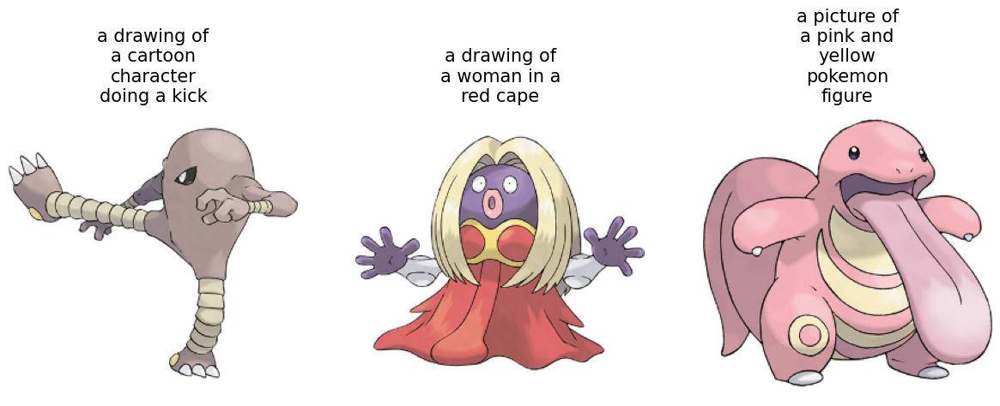
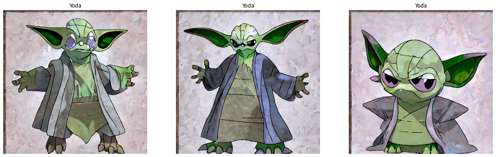
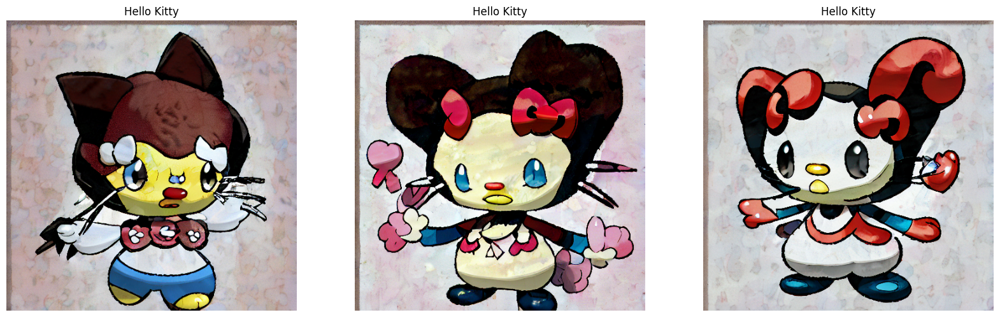
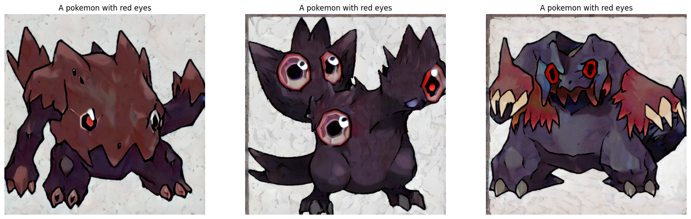

Fine-tuning Stable Diffusion
Author: Sayak Paul, Chansung Park
Date created: 2022/12/28
Last modified: 2023/01/13
Description: Fine-tuning Stable Diffusion using a custom image-caption dataset.

Introduction
This tutorial shows how to fine-tune a
Stable Diffusion model
on a custom dataset of {image, caption} pairs. We build on top of the fine-tuning
script provided by Hugging Face
here.
We assume that you have a high-level understanding of the Stable Diffusion model. The following resources can be helpful if you're looking for more information in that regard:
It's highly recommended that you use a GPU with at least 30GB of memory to execute the code.
By the end of the guide, you'll be able to generate images of interesting Pokémon:

The tutorial relies on KerasCV 0.4.0. Additionally, we need at least TensorFlow 2.11 in order to use AdamW with mixed precision.
!pip install keras-cv==0.6.0 -q
!pip install -U tensorflow -q
!pip install keras-core -q
What are we fine-tuning?
A Stable Diffusion model can be decomposed into several key models:
- A text encoder that projects the input prompt to a latent space. (The caption associated with an image is referred to as the "prompt".)
- A variational autoencoder (VAE) that projects an input image to a latent space acting as an image vector space.
- A diffusion model that refines a latent vector and produces another latent vector, conditioned on the encoded text prompt
- A decoder that generates images given a latent vector from the diffusion model.
It's worth noting that during the process of generating an image from a text prompt, the image encoder is not typically employed.
However, during the process of fine-tuning, the workflow goes like the following:
- An input text prompt is projected to a latent space by the text encoder.
- An input image is projected to a latent space by the image encoder portion of the VAE.
- A small amount of noise is added to the image latent vector for a given timestep.
- The diffusion model uses latent vectors from these two spaces along with a timestep embedding to predict the noise that was added to the image latent.
- A reconstruction loss is calculated between the predicted noise and the original noise added in step 3.
- Finally, the diffusion model parameters are optimized w.r.t this loss using gradient descent.
Note that only the diffusion model parameters are updated during fine-tuning, while the (pre-trained) text and the image encoders are kept frozen.
Don't worry if this sounds complicated. The code is much simpler than this!
Imports
from textwrap import wrap
import os
import keras_cv
import matplotlib.pyplot as plt
import numpy as np
import pandas as pd
import tensorflow as tf
import tensorflow.experimental.numpy as tnp
from keras_cv.models.stable_diffusion.clip_tokenizer import SimpleTokenizer
from keras_cv.models.stable_diffusion.diffusion_model import DiffusionModel
from keras_cv.models.stable_diffusion.image_encoder import ImageEncoder
from keras_cv.models.stable_diffusion.noise_scheduler import NoiseScheduler
from keras_cv.models.stable_diffusion.text_encoder import TextEncoder
from tensorflow import keras
Data loading
We use the dataset
Pokémon BLIP captions.
However, we'll use a slightly different version which was derived from the original
dataset to fit better with tf.data. Refer to
the documentation
for more details.
data_path = tf.keras.utils.get_file(
origin="https://huggingface.co/datasets/sayakpaul/pokemon-blip-original-version/resolve/main/pokemon_dataset.tar.gz",
untar=True,
)
data_frame = pd.read_csv(os.path.join(data_path, "data.csv"))
data_frame["image_path"] = data_frame["image_path"].apply(
lambda x: os.path.join(data_path, x)
)
data_frame.head()
| image_path | caption | |
|---|---|---|
| 0 | /home/jupyter/.keras/datasets/pokemon_dataset/... | a drawing of a green pokemon with red eyes |
| 1 | /home/jupyter/.keras/datasets/pokemon_dataset/... | a green and yellow toy with a red nose |
| 2 | /home/jupyter/.keras/datasets/pokemon_dataset/... | a red and white ball with an angry look on its... |
| 3 | /home/jupyter/.keras/datasets/pokemon_dataset/... | a cartoon ball with a smile on it's face |
| 4 | /home/jupyter/.keras/datasets/pokemon_dataset/... | a bunch of balls with faces drawn on them |
Since we have only 833 {image, caption} pairs, we can precompute the text embeddings from
the captions. Moreover, the text encoder will be kept frozen during the course of
fine-tuning, so we can save some compute by doing this.
Before we use the text encoder, we need to tokenize the captions.
# The padding token and maximum prompt length are specific to the text encoder.
# If you're using a different text encoder be sure to change them accordingly.
PADDING_TOKEN = 49407
MAX_PROMPT_LENGTH = 77
# Load the tokenizer.
tokenizer = SimpleTokenizer()
# Method to tokenize and pad the tokens.
def process_text(caption):
tokens = tokenizer.encode(caption)
tokens = tokens + [PADDING_TOKEN] * (MAX_PROMPT_LENGTH - len(tokens))
return np.array(tokens)
# Collate the tokenized captions into an array.
tokenized_texts = np.empty((len(data_frame), MAX_PROMPT_LENGTH))
all_captions = list(data_frame["caption"].values)
for i, caption in enumerate(all_captions):
tokenized_texts[i] = process_text(caption)
Prepare a tf.data.Dataset
In this section, we'll prepare a tf.data.Dataset object from the input image file paths
and their corresponding caption tokens. The section will include the following:
- Pre-computation of the text embeddings from the tokenized captions.
- Loading and augmentation of the input images.
- Shuffling and batching of the dataset.
RESOLUTION = 256
AUTO = tf.data.AUTOTUNE
POS_IDS = tf.convert_to_tensor([list(range(MAX_PROMPT_LENGTH))], dtype=tf.int32)
augmenter = keras.Sequential(
layers=[
keras_cv.layers.CenterCrop(RESOLUTION, RESOLUTION),
keras_cv.layers.RandomFlip(),
tf.keras.layers.Rescaling(scale=1.0 / 127.5, offset=-1),
]
)
text_encoder = TextEncoder(MAX_PROMPT_LENGTH)
def process_image(image_path, tokenized_text):
image = tf.io.read_file(image_path)
image = tf.io.decode_png(image, 3)
image = tf.image.resize(image, (RESOLUTION, RESOLUTION))
return image, tokenized_text
def apply_augmentation(image_batch, token_batch):
return augmenter(image_batch), token_batch
def run_text_encoder(image_batch, token_batch):
return (
image_batch,
token_batch,
text_encoder([token_batch, POS_IDS], training=False),
)
def prepare_dict(image_batch, token_batch, encoded_text_batch):
return {
"images": image_batch,
"tokens": token_batch,
"encoded_text": encoded_text_batch,
}
def prepare_dataset(image_paths, tokenized_texts, batch_size=1):
dataset = tf.data.Dataset.from_tensor_slices((image_paths, tokenized_texts))
dataset = dataset.shuffle(batch_size * 10)
dataset = dataset.map(process_image, num_parallel_calls=AUTO).batch(batch_size)
dataset = dataset.map(apply_augmentation, num_parallel_calls=AUTO)
dataset = dataset.map(run_text_encoder, num_parallel_calls=AUTO)
dataset = dataset.map(prepare_dict, num_parallel_calls=AUTO)
return dataset.prefetch(AUTO)
The baseline Stable Diffusion model was trained using images with 512x512 resolution. It's unlikely for a model that's trained using higher-resolution images to transfer well to lower-resolution images. However, the current model will lead to OOM if we keep the resolution to 512x512 (without enabling mixed-precision). Therefore, in the interest of interactive demonstrations, we kept the input resolution to 256x256.
# Prepare the dataset.
training_dataset = prepare_dataset(
np.array(data_frame["image_path"]), tokenized_texts, batch_size=4
)
# Take a sample batch and investigate.
sample_batch = next(iter(training_dataset))
for k in sample_batch:
print(k, sample_batch[k].shape)
images (4, 256, 256, 3)
tokens (4, 77)
encoded_text (4, 77, 768)
We can also take a look at the training images and their corresponding captions.
plt.figure(figsize=(20, 10))
for i in range(3):
ax = plt.subplot(1, 4, i + 1)
plt.imshow((sample_batch["images"][i] + 1) / 2)
text = tokenizer.decode(sample_batch["tokens"][i].numpy().squeeze())
text = text.replace("<|startoftext|>", "")
text = text.replace("<|endoftext|>", "")
text = "\n".join(wrap(text, 12))
plt.title(text, fontsize=15)
plt.axis("off")

A trainer class for the fine-tuning loop
class Trainer(tf.keras.Model):
# Reference:
# https://github.com/huggingface/diffusers/blob/main/examples/text_to_image/train_text_to_image.py
def __init__(
self,
diffusion_model,
vae,
noise_scheduler,
use_mixed_precision=False,
max_grad_norm=1.0,
**kwargs
):
super().__init__(**kwargs)
self.diffusion_model = diffusion_model
self.vae = vae
self.noise_scheduler = noise_scheduler
self.max_grad_norm = max_grad_norm
self.use_mixed_precision = use_mixed_precision
self.vae.trainable = False
def train_step(self, inputs):
images = inputs["images"]
encoded_text = inputs["encoded_text"]
batch_size = tf.shape(images)[0]
with tf.GradientTape() as tape:
# Project image into the latent space and sample from it.
latents = self.sample_from_encoder_outputs(self.vae(images, training=False))
# Know more about the magic number here:
# https://keras.io/examples/generative/fine_tune_via_textual_inversion/
latents = latents * 0.18215
# Sample noise that we'll add to the latents.
noise = tf.random.normal(tf.shape(latents))
# Sample a random timestep for each image.
timesteps = tnp.random.randint(
0, self.noise_scheduler.train_timesteps, (batch_size,)
)
# Add noise to the latents according to the noise magnitude at each timestep
# (this is the forward diffusion process).
noisy_latents = self.noise_scheduler.add_noise(
tf.cast(latents, noise.dtype), noise, timesteps
)
# Get the target for loss depending on the prediction type
# just the sampled noise for now.
target = noise # noise_schedule.predict_epsilon == True
# Predict the noise residual and compute loss.
timestep_embedding = tf.map_fn(
lambda t: self.get_timestep_embedding(t), timesteps, dtype=tf.float32
)
timestep_embedding = tf.squeeze(timestep_embedding, 1)
model_pred = self.diffusion_model(
[noisy_latents, timestep_embedding, encoded_text], training=True
)
loss = self.compiled_loss(target, model_pred)
if self.use_mixed_precision:
loss = self.optimizer.get_scaled_loss(loss)
# Update parameters of the diffusion model.
trainable_vars = self.diffusion_model.trainable_variables
gradients = tape.gradient(loss, trainable_vars)
if self.use_mixed_precision:
gradients = self.optimizer.get_unscaled_gradients(gradients)
gradients = [tf.clip_by_norm(g, self.max_grad_norm) for g in gradients]
self.optimizer.apply_gradients(zip(gradients, trainable_vars))
return {m.name: m.result() for m in self.metrics}
def get_timestep_embedding(self, timestep, dim=320, max_period=10000):
half = dim // 2
log_max_period = tf.math.log(tf.cast(max_period, tf.float32))
freqs = tf.math.exp(
-log_max_period * tf.range(0, half, dtype=tf.float32) / half
)
args = tf.convert_to_tensor([timestep], dtype=tf.float32) * freqs
embedding = tf.concat([tf.math.cos(args), tf.math.sin(args)], 0)
embedding = tf.reshape(embedding, [1, -1])
return embedding
def sample_from_encoder_outputs(self, outputs):
mean, logvar = tf.split(outputs, 2, axis=-1)
logvar = tf.clip_by_value(logvar, -30.0, 20.0)
std = tf.exp(0.5 * logvar)
sample = tf.random.normal(tf.shape(mean), dtype=mean.dtype)
return mean + std * sample
def save_weights(self, filepath, overwrite=True, save_format=None, options=None):
# Overriding this method will allow us to use the `ModelCheckpoint`
# callback directly with this trainer class. In this case, it will
# only checkpoint the `diffusion_model` since that's what we're training
# during fine-tuning.
self.diffusion_model.save_weights(
filepath=filepath,
overwrite=overwrite,
save_format=save_format,
options=options,
)
One important implementation detail to note here: Instead of directly taking the latent vector produced by the image encoder (which is a VAE), we sample from the mean and log-variance predicted by it. This way, we can achieve better sample quality and diversity.
It's common to add support for mixed-precision training along with exponential moving averaging of model weights for fine-tuning these models. However, in the interest of brevity, we discard those elements. More on this later in the tutorial.
Initialize the trainer and compile it
# Enable mixed-precision training if the underlying GPU has tensor cores.
USE_MP = True
if USE_MP:
keras.mixed_precision.set_global_policy("mixed_float16")
image_encoder = ImageEncoder()
diffusion_ft_trainer = Trainer(
diffusion_model=DiffusionModel(RESOLUTION, RESOLUTION, MAX_PROMPT_LENGTH),
# Remove the top layer from the encoder, which cuts off the variance and only
# returns the mean.
vae=tf.keras.Model(
image_encoder.input,
image_encoder.layers[-2].output,
),
noise_scheduler=NoiseScheduler(),
use_mixed_precision=USE_MP,
)
# These hyperparameters come from this tutorial by Hugging Face:
# https://huggingface.co/docs/diffusers/training/text2image
lr = 1e-5
beta_1, beta_2 = 0.9, 0.999
weight_decay = (1e-2,)
epsilon = 1e-08
optimizer = tf.keras.optimizers.experimental.AdamW(
learning_rate=lr,
weight_decay=weight_decay,
beta_1=beta_1,
beta_2=beta_2,
epsilon=epsilon,
)
diffusion_ft_trainer.compile(optimizer=optimizer, loss="mse")
Fine-tuning
To keep the runtime of this tutorial short, we just fine-tune for an epoch.
epochs = 1
ckpt_path = "finetuned_stable_diffusion.h5"
ckpt_callback = tf.keras.callbacks.ModelCheckpoint(
ckpt_path,
save_weights_only=True,
monitor="loss",
mode="min",
)
diffusion_ft_trainer.fit(training_dataset, epochs=epochs, callbacks=[ckpt_callback])
Inference
We fine-tuned the model for 60 epochs on an image resolution of 512x512. To allow training with this resolution, we incorporated mixed-precision support. You can check out this repository for more details. It additionally provides support for exponential moving averaging of the fine-tuned model parameters and model checkpointing.
For this section, we'll use the checkpoint derived after 60 epochs of fine-tuning.
weights_path = tf.keras.utils.get_file(
origin="https://huggingface.co/sayakpaul/kerascv_sd_pokemon_finetuned/resolve/main/ckpt_epochs_72_res_512_mp_True.h5"
)
img_height = img_width = 512
pokemon_model = keras_cv.models.StableDiffusion(
img_width=img_width, img_height=img_height
)
# We just reload the weights of the fine-tuned diffusion model.
pokemon_model.diffusion_model.load_weights(weights_path)
By using this model checkpoint, you acknowledge that its usage is subject to the terms of the CreativeML Open RAIL-M license at https://raw.githubusercontent.com/CompVis/stable-diffusion/main/LICENSE
Now, we can take this model for a test-drive.
prompts = ["Yoda", "Hello Kitty", "A pokemon with red eyes"]
images_to_generate = 3
outputs = {}
for prompt in prompts:
generated_images = pokemon_model.text_to_image(
prompt, batch_size=images_to_generate, unconditional_guidance_scale=40
)
outputs.update({prompt: generated_images})
25/25 [==============================] - 17s 231ms/step
25/25 [==============================] - 6s 229ms/step
25/25 [==============================] - 6s 229ms/step
With 60 epochs of fine-tuning (a good number is about 70), the generated images were not
up to the mark. So, we experimented with the number of steps Stable Diffusion takes
during the inference time and the unconditional_guidance_scale parameter.
We found the best results with this checkpoint with unconditional_guidance_scale set to
40.
def plot_images(images, title):
plt.figure(figsize=(20, 20))
for i in range(len(images)):
ax = plt.subplot(1, len(images), i + 1)
plt.imshow(images[i])
plt.title(title, fontsize=12)
plt.axis("off")
for prompt in outputs:
plot_images(outputs[prompt], prompt)



We can notice that the model has started adapting to the style of our dataset. You can check the accompanying repository for more comparisons and commentary. If you're feeling adventurous to try out a demo, you can check out this resource.
Conclusion and acknowledgements
We demonstrated how to fine-tune the Stable Diffusion model on a custom dataset. While the results are far from aesthetically pleasing, we believe with more epochs of fine-tuning, they will likely improve. To enable that, having support for gradient accumulation and distributed training is crucial. This can be thought of as the next step in this tutorial.
There is another interesting way in which Stable Diffusion models can be fine-tuned, called textual inversion. You can refer to this tutorial to know more about it.
We'd like to acknowledge the GCP Credit support from ML Developer Programs' team at Google. We'd like to thank the Hugging Face team for providing the fine-tuning script . It's very readable and easy to understand.